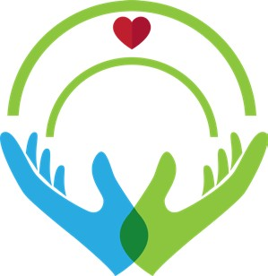
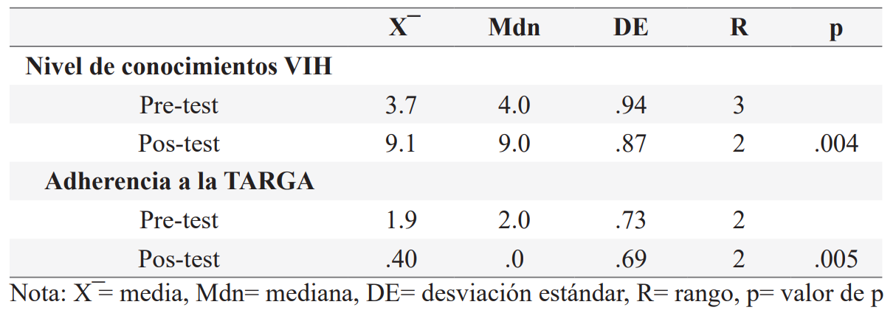

ISSN-PRINT 1794-9831 / E-ISSN 2322-7028
Vol. 19 Nº 3 / sep - dic, 2022 / Cúcuta, Colombia.
ISSN-PRINT 1794-9831 / E-ISSN 2322-7028
Vol. 19 Nº 3 / sep - dic, 2022 / Cúcuta, Colombia.
Resumen
Introducción: La infección por el virus de la inmunodeficiencia humana figura como uno de los mayores retos de salud pública, por lo que el conocimiento sobre la enfermedad y la adherencia a la terapia antirretroviral en personas que viven con VIH, son elementos cruciales para mitigar las secuelas sanitarias de la epidemia. Objetivo: Evaluar la efectividad de una intervención educativa para incrementar el nivel de conocimientos sobre VIH y fomentar la adherencia terapéutica antirretroviral en personas que padecen de VIH. Materiales y métodos: Estudio pre-experimental sin grupo de control, en el que participaron 10 personas que tienen VIH bajo tratamiento antirretroviral, a través de un muestreo no probabilístico por bola de nieve. La intervención se desarrolló en tres etapas, con tres sesiones. Se aplicaron dos instrumentos: un cuestionario diseñado ex profeso para medir el conocimiento sobre VIH, evaluado pos-intervención mediante la prueba Wilcoxon y el test Morisky-Green para medir la adherencia terapéutica, analizada a través de la prueba t de Student de muestras emparejadas. Resultados: En la etapa diagnóstica, el 100% de la muestra presentó niveles bajos de conocimientos sobre VIH y no adherencia terapéutica. Al finalizar la intervención, el 90% de los participantes incrementó el nivel de conocimientos y el 70% eran adherentes a la terapia, ambos resultados con diferencias estadísticamente significativas (p=.004; p=.005). Conclusiones: La intervención educativa demostró ser efectiva en el incremento del nivel de conocimientos sobre VIH y fomentó la adherencia a la terapia antirretroviral.
Palabras Claves: Atención de enfermería; Educación en salud; VIH; Terapia antirretroviral altamente activa.
Abstract
Introduction: The infection caused by the human immunodeficiency virus figures as one of the greatest challenges for public health, therefore, knowledge about the disease and the adherence to antiretroviral therapy for people who live with HIV, are crucial elements to mitigate health effects of this epidemic. Objective: Evaluate the effectivity of an educational intervention to increase the level of knowledge on HIV and encourage the adherence to antiretroviral therapy in people who have HIV. Materials and methods: Pre-experimental study with no control group, with the participation of 10 people with HIV on antiretroviral treatment, through the non-probability method of snowball sampling. The intervention was developed in three stages, with three sessions. Two instruments were applied: a questionnaire designed expressly to measure knowledge on HIV, evaluated post-intervention through the Wilcoxon signed-rank test and the Morisky-Green test to measure the therapeutic adherence, analyzed through a t-test of paired samples. Results: in the diagnostic stage, 100% of the sample showed low levels of knowledge on HIV and no therapeutic adherence. At the end of the intervention, 90% of the participants increased their level of knowledge and 70% where adherent to therapy, both results with significant statistical differences (p=.004; p=.005). Conclusions: The educational intervention demonstrated to be effective by increasing the level of knowledge on HIV and encouraging the adherence to antiretroviral therapy.
KeyWords: Nursing care; Health education; HIV; Highly active antiretroviral therapy
Resumo
Introdução: A infecção pelo vírus da imunodeficiência humana é um dos maiores desafios à saúde pública, por isso o conhecimento sobre a doença e a adesão à terapia antirretroviral em pessoas vivendo com HIV são aspectos fundamentais para mitigar as consequências para a saúde pública da epidemia. Objetivo: Avaliar a eficácia de uma intervenção educacional para aumentar o nível de conhecimento sobre o HIV e promover a adesão terapêutica antirretroviral em pessoas que sofrem de HIV. Materiais e métodos: Estudo pré-experimental sem grupo controle, no qual participaram 10 pessoas com HIV sob tratamento antirretroviral, empregando-se amostragem não probabilística. A intervenção foi desenvolvida em três etapas, com três sessões. Foram aplicados dois instrumentos: um questionário projetado especificamente para medir o conhecimento sobre o HIV, avaliado após a intervenção pelo teste de Wilcoxon e o teste Morisky-Green para medir a adesão terapêutica, analisado através do teste t de Student de amostras emparelhadas. Resultados: Na fase diagnóstica, 100% da amostra apresentou baixos níveis de conhecimento sobre HIV e não adesão terapêutica. Ao final da intervenção, 90% dos participantes aumentaram o nível de conhecimento e 70% foram adeptos à terapia, ambos resultados com diferenças estatisticamente significativas (p= 0,004; p = 0,005). Conclusões: A intervenção educacional mostrou-se eficaz no aumento do nível de conhecimento sobre o HIV e promoveu a adesão à terapia antirretroviral.
Palavras-chave: Cuidados de enfermagen; Educação em Saúde; HIV; Terapia antirretroviral de alta atividade.
Autor de correspondencia*
1* Licenciado en
Enfermería, Maestro
en Enfermería. Enfermero asistencial,
Instituto Mexicano del Seguro Social.
Sonora, México.
pavel_brp@hotmail.com,
Licenciado en
Enfermería, Maestro
en Enfermería. Enfermero asistencial,
Instituto Mexicano del Seguro Social.
Sonora, México.
pavel_brp@hotmail.com,  0000-0003-0551-9947
0000-0003-0551-9947
2* Licenciada en
Enfermería, Maestra en
Enfermería. Enfermera asistencial, Hospital Angeles Puebla. Puebla, México.
esmericoo.er@gmail.com, 0000-0003-3852-4793
3* Licenciada en
Enfermería, Maestra en
Enfermería. Puebla, México.
jazz_fly18@hotmail.com, 0000-0001-6415-738X
4* Licenciado en
Enfermería, Maestro
en Ciencias de Enfermería, Doctor en
Ciencias de Enfermería. Profesor investigador, Benemérita Universidad
Autónoma de Puebla. Puebla, México.
javier.baez@correo.buap.mx, 0000-0003-4986-6596
5* Licenciado en
Enfermería, Maestro en
Enfermería. Doctorando en Ciencias de
Enfermería, Universidad de Guanajuato. Guanajuato, México.
ub.delgadillobreceda@gmail.com, 0000-0002-7034-13242
Recibido: 26 mayo 2022
Aprobado: : 14 agosto 2022
Para citar este artículo / To reference this article / Para citar este artigo: Rodríguez-Bustamante P, RicoPérez E, Mayorquin-Muñoz CJ, Báez-Hernández FJ, Delgadillo-Breceda UB. Efectividad de intervención educativa en conocimientos sobre VIH y adherencia terapéutica antirretroviral. 2022; 19(3):67-74 https://doi.org/10.22463/17949831.3275
© Universidad Francisco de Paula Santander.
Este es un artículo bajo la licencia CC-BY-NC-ND

Introducción
La infección por el virus de la inmunodeficiencia humana (VIH) figura como uno de los mayores retos de salud pública en el mundo (1). Esta enfermedad infecta las células y debilita los sistemas de defensa a medida que la infección avanza, arremete contra los linfocitos CD4 interrumpiendo el adecuado funcionamiento de la inmunidad, lo que origina un deterioro gradual y una consecuente situación de inmunodeficiencia humana (2).
Para el cierre del año 2020, se contaba con 37.7 millones de personas que viven con VIH (PVV) en todo el mundo, de las cuales 1.5 millones contrajeron la infección ese mismo año. Para el cierre de junio 2021 solo 28.2 millones tenían acceso a la terapia antirretroviral de gran actividad (TARGA) (3). En México el panorama no es distinto, puesto que a finales del 2021 se notificaron 328,791 PVV, de las que 13,139 fueron nuevos casos y el número de defunciones relacionadas al virus en 2019 fue de 5,281 individuos; en relación con este fenómeno, una de las entidades federativas con mayor número de casos en el país es el estado de Puebla, que figura en el sexto puesto con 15,035 PVV (4). En términos porcentuales, las PVV en México representan el 0.06% de la población (5), por lo que, al ser una minoría social, es un grupo que se caracteriza por hacer frente a múltiples problemas emocionales como el estrés, la ansiedad y la depresión, los cuales constituyen una gran amenaza para la salud física, mental y el seguimiento de la adherencia a la TARGA (6,7).
Se debe precisar que a pesar de los grandes avances en materia de salud, el VIH sigue generando muchas secuelas sanitarias, siendo la principal medida de éxito para su tratamiento y control la aplicación de la TARGA, dado que a través de la supresión viral se ha logrado disminuir ampliamente la mortalidad relacionada con esta enfermedad (8,9). A propósito, el Programa Conjunto de las Naciones Unidas sobre el VIH/Sida a nivel internacional, ha promovido los objetivos 90-90- 90 con la finalidad de poner fin a la epidemia, al reducir la cantidad de VIH presente en el cuerpo de las PVV hasta niveles indetectables y así mejorar la salud. Por eso, para evitar la propagación del virus, se ha implementado la terapia antirretroviral (10).
En virtud de lo expuesto anteriormente, la evidencia disponible demuestra que esta terapia tiene mejores resultados en presencia de la adherencia al tratamiento, puesto que se perfecciona de manera considerable el pronóstico, reduciendo la incidencia de infecciones oportunistas y la frecuencia de hospitalizaciones (6,7,11). No obstante, la no adherencia a la TARGA se ha vuelto un problema a nivel mundial, puesto que a pesar de su efectividad clínica, la falta de cumplimiento de los tratamientos farmacológicos se ven afectados por: estigmas sociales, problemas emergentes de salud mental, efectos secundarios al medicamento, falta de apoyo social e instrucción sobre la enfermedad; por tanto, estas situaciones propician la resistencia vírica y comprometen la efectividad medicamentosa (7,9). Ante este escenario es imprescindible destacar la labor del personal sanitario en la elaboración de estrategias educativas para abordar oportunamente a las PVV, en aras de promover la salud, mantener y mejorar la calidad y expectativas de vida (12).
Se ha reportado que una de cada cuatro PVV tiene un nivel de instrucción bajo referente a su enfermedad (13), por lo que la ruta idónea para asistir y facilitar la promoción de la salud en términos personales y colectivos son las intervenciones educativas (7,14,15). Como consecuencia, algunos estudios realizados en México, Portugal y Tanzania han demostrado que la ejecución de intervenciones psicoeducativas bajo un enfoque conductista han sido útiles para mejorar el conocimiento de la patología y la adherencia terapéutica (7,9,15,16). De igual manera, diversos autores han realizado programas de intervención cognitivos, obteniendo resultados favorables en cuanto al nivel de conocimientos sobre VIH y la adherencia a la TARGA (11,17,18). Al respecto, un estudio realizado en Cuba (18) desarrolló un programa educativo, a través de un modelo metodológico, cuyo seguimiento sistematizado de pasos como guías procedimentales para la actuación, logró efectos favorables orientados al conocimiento sobre el VIH y la concientización en torno a una óptima adherencia al tratamiento farmacológico.
Objetivo general
Evaluar la efectividad de una intervención educativa basada en el modelo PRECEDE (19,20), para incrementar el nivel de conocimientos sobre VIH y fomentar la adherencia a la TARGA en PVV.
Materiales y Métodos
Para el desarrollo de la intervención educativa, se realizó un estudio pre-experimental pre-test y pos-test sin grupo de control (21), con un muestreo no probabilístico por bola de nieve, respecto al difícil acceso de las PVV (22). El universo de estudio se integró por 10 elementos, localizados a través de dos participantes clave, quienes facilitaron el proceso de reclutamiento bajo los siguientes criterios de selección: personas de ambos sexos, mayores de 18 años, residentes del estado de Puebla (México), con diagnóstico no mayor a un año, bajo tratamiento antirretroviral, que supieran leer, escribir y aceptaran participar en el estudio. Se excluyó a quienes no desearon participar en la investigación.
En términos metodológicos, el estudio se dividió en tres bloques, según lo propuesto por el modelo PRECEDE (19), siendo un instrumento que permite diagnosticar necesidades educativas para la formulación de planes tendientes a la modificación de conductas y la ampliación del conocimiento (20). A continuación se muestra el proceso que se siguió: 1) etapa diagnóstica (pre-test), sirvió para medir la primera variable de estudio, relacionada con el nivel de conocimientos sobre VIH. Con este propósito se aplicó un cuestionario diseñado ex profeso, en función de la literatura científica disponible y posteriormente se sometió a revisión por parte de expertos. Este pre-test está conformado por dos apartados: el primero aborda datos personales como sexo, edad, estado civil y escolaridad; y el segundo está integrado por diez reactivos con opción de respuesta múltiple, asignando valores de cero a las respuestas incorrectas y uno a las correctas; del mismo modo, se consideró como no aprobado a puntajes iguales o menores de cinco y aprobado a puntajes iguales o mayores de seis. Asimismo, se clasificó como bajo conocimiento a puntajes de 0 a 5, regulares a valores de 6 a 7 y buenos a puntajes de 8 a 10.
En cuanto a la medición de la segunda variable de interés, adherencia a la TARGA, se empleó el Test de Morisky-Green, el cual está conformado por cuatro preguntas dicotómicas de auto reporte con validación en población latina (alfa de Cronbach: 0.82), en donde la persona responde sí/no conforme a su conducta ante el tratamiento antirretroviral. En este sentido, el test considera adherente a la persona que responda negativamente a los reactivos uno, tres y cuatro, y positivamente al reactivo dos, con un puntaje de 0 puntos, y no adherente a puntajes iguales o mayores a 1 (23,24). 2) Etapa de planeación e implementación. Los resultados de la primera etapa fueron el punto de partida para la planificación del programa educativo, desarrollado bajo un panorama de estrategias centradas en el participante (25,26), a través de la recepción significativa del aprendizaje, considerándolo como un proceso que posibilita el desarrollo de nuevos conocimientos, mediante la relación sustantiva entre las ideas previas del individuo (identificadas en la etapa diagnóstica) con la información propuesta para el aprendizaje (27,28).
Por otra parte, la intervención educativa se programó en tres sesiones, con una duración de 40 minutos, respectivamente, una vez a la semana, en semanas consecutivas, con control de lista de asistencia, en un área privada y en un ambiente de tranquilidad y respeto. De manera análoga, la secuencia didáctica se desarrolló a través de enseñanza expositiva, con estrategias pre-instruccionales como planteamiento de objetivos y lluvia de ideas; co-instruccionales como señalizaciones, ilustraciones descriptivas y analogías; y pos-instruccionales mediante preguntas intercaladas (25). La primera sesión se denominó “Conociendo del Virus de la Inmunodeficiencia Humana (VIH)” con la intención de proporcionar información básica sobre la enfermedad, su clasificación, vías de transmisión, cuadro clínico
y complicaciones. La segunda “Terapia antirretroviral: mejorando la calidad y expectativa de vida” con el propósito de conocer la TARGA, su importancia, mecanismos de acción, tipos de tratamiento y efectos secundarios; y, la tercera “Adherencia terapéutica y su importancia como herramienta de éxito” con el objetivo de reforzar la elementalidad y los beneficios del adecuado seguimiento de la TARGA.
3) Etapa de evaluación (pos-test). Al finalizar la tercera sesión programada, se aplicó el cuestionario de conocimientos sobre VIH y el Test Morisky-Green, para identificar los cambios generados tras la intervención. Conviene subrayar que el estudio se apegó al Reglamento de la Ley General de Salud en Materia de Investigación de México (29); igualmente, se conservó el anonimato, la confidencialidad de los datos recabados y la integridad de las PVV. Se consideraron los principios de bioética (30), al actuar con autonomía en la toma de decisiones y respetar la libertad de los participantes para abandonar la investigación si así lo deseaban. Además, se rigió a través de los principios de beneficencia, no maleficencia y justicia, puesto que la intervención fue realizada por profesionales de enfermería con capacitación previa en salud sexual, enfocados en promover el bienestar, mediante un trato justo e igualitario. Por último, se cumplió con lo establecido en la Ley General de Protección de Datos personales (31), al solicitar un consentimiento informado, comunicar el objetivo del estudio y describir detalladamente en qué consistiría la intervención y el resguardo de la información.
El análisis de datos se realizó a través del paquete estadístico Statistical Package for the Social Sciences (SPSS) versión 24 a través del cual se procedió a realizar el análisis descriptivo de los datos sociodemográficos mediante frecuencias y porcentajes, medidas de tendencia central y dispersión. Además, se ejecutó la prueba de bondad de ajuste (Shapiro-Wilk), la prueba no paramétrica Wilcoxon para el pre-test y pos-test del nivel de conocimientos sobre VIH y se corrió la prueba t de Student de muestras emparejadas, para conocer los cambios generados en la adherencia a la TARGA
Resultados
La muestra se conformó por 10 participantes, de los cuales nueve pertenecían al sexo masculino y una participante al sexo femenino. El promedio de edad fue de 26 + 3 años, el estado civil de ocho corresponde a solteros y dos señalaron vivir en unión libre; como máximo grado de estudios predominó el nivel en licenciatura con un 60%.
En la etapa diagnóstica de la intervención, se observó que el 100% de los participantes obtuvieron puntajes no aprobatorios y presentaron un nivel de conocimientos bajo sobre el VIH (X ̅= 3.7, DE= +.94), y el total no es adherente a la TARGA (X ̅= 1.9, DE= + .73).
Al determinar la efectividad de la intervención educativa, como se muestra en la Tabla 1, desde el punto de vista descriptivo se identificó que el 90% de los participantes incrementó el nivel de conocimientos referente al VIH (Mdn= 9, R= 2). Con el objeto de soportar el punto de vista inferencial, al no cumplir con el criterio de normalidad, se corrió la prueba Wilcoxon con un efecto favorable y estadísticamente significativo (Z= -2.859, p= .004). En cuanto al nivel de adherencia a la TARGA, también se obtuvieron cambios positivos, puesto que el 70% de la muestra se adhiere a la terapia (X ̅= .40, DE= + .69), en la que, al presentar una distribución normal de datos, se ratificó a través de la prueba t de Student con un valor de t= 3.73, siendo estadísticamente significativo (p= .005).
Tabla 1. Nivel de conocimientos sobre VIH y adherencia a la TARGA
Fuente: Elaboración propia
Discusión
El presente estudio tuvo el propósito de evaluar la efectividad de una intervención educativa para incrementar el nivel de conocimientos sobre VIH y fomentar la adherencia a la TARGA en PVV. Los datos sociodemográficos recabados permitieron mostrar la predominancia del sexo masculino, resultados similares a los referidos por la Dirección General de Epidemiología (4), donde se señala que la mayoría de las PVV en México son varones. En cuanto a escolaridad predominó el nivel licenciatura, coincidiendo con lo reportado por Neria et al. (9), quienes identificaron preponderancia de educación superior en las PVV sujetos de su intervención. Por lo que se pudiera indicar que los hombres, tienen una baja percepción de susceptibilidad hacia el VIH, lo que se puede relacionar con prácticas sexuales de riesgo, las cuales, son independientes del nivel educativo. Circunstancias que propician la necesidad de realizar actividades de alfabetización en salud.
En relación al nivel de conocimientos sobre VIH, el estudio mostró bajo nivel de conocimientos de las PVV en torno a su enfermedad, resultado que pudiera deberse a que el grupo de estudio contaba con un diagnóstico reciente (tiempo menor a un año); con respecto a este panorama las PVV se encuentran en un estado de vulnerabilidad y adaptación a la enfermedad (12). De igual manera, el bajo nivel de instrucción con respecto al VIH coincidió con lo referido por Dávila et al. (13), y Ribeiro et al. (15), quienes sustentan que las PVV carecen de dirección y entendimiento sobre su condición actual, lo que puede repercutir en el manejo, así como impactar negativamente en el seguimiento de indicaciones emitidas por el personal de salud. Asimismo, los resultados pos-test coincidieron con los hallazgos de Neria et al. (9), Ribeiro et al. (15), y Quintana et al. (17), en los que se muestra la efectividad de las intervenciones educativas para mejorar los saberes sustantivos referentes a la infección por VIH. Dicho lo anterior, el resultado favorable que se obtuvo puede corresponder a la estimulación de habilidades cognitivas, gracias a la empatía percibida por los participantes, al ser escuchados respecto a sus inquietudes y necesidades durante las tres etapas de la intervención. Es decir, que se demuestra la importancia de la escucha activa y el trato respetuoso por parte del profesional de la salud. En cuanto al nivel de adherencia a la TARGA, al finalizar el estudio se lograron cambios significativos en la mayoría de los participantes, lo que coincide con estudios similares realizados por Rendón y Cerrato (11), Zárate et al. (14), y Pérez et al. (18), quienes demostraron el efecto positivo de las intervenciones educativas dirigidas a promover el mejoramiento en la adherencia terapéutica. Sin embargo, el desarrollo de la intervención fue diferente a lo realizado por Plascencia et al. (7), Neria et al. (9), Ribeiro et al. (15), y Siril et al. (16), quienes implementaron programas educativos con enfoques conductistas en los que se trataron tópicos concernientes al estado emocional de las PVV. No obstante, se encontró similitud con el reporte de sus resultados y el efecto significativo que se consiguió al finalizar la intervención. Por tanto, los resultados permiten sugerir que tanto los programas psicoeducativos como los dirigidos al componente cognitivo, generan cambios favorables en el fomento de la adherencia a la TARGA. Además, permite generar estrategias conducentes a promover la relación entre el sujeto cognoscente (PVV) y el objeto cognoscible (TARGA), a través de espacios informativos sin prejuicios, libres de discriminación, propiciando efectos positivos en los niveles del manejo terapéutico.
Por último, es importante mencionar que el diseño del estudio, el empleo de un muestreo de tipo no probabilístico y el reducido tamaño muestral minimizan la probabilidad de generalizar los resultados encontrados en esta investigación. De ahí, que es importante resaltar que estos hallazgos pueden propiciar un punto de partida para la formulación de intervenciones específicas dirigidas a esta minoría social en el contexto mexicano, a fin de que estos grupos poblacionales dispongan de herramientas para controlar su enfermedad, contribuir al cumplimiento de los objetivos 90-90-90 (10), prevenir complicaciones y mejorar la calidad y expectativas de vida.
Conclusión
Los resultados de este estudio permiten inferir que las intervenciones educativas basadas en el modelo PRECEDE, como estrategias promotoras de la salud, con tres sesiones de 40 minutos de duración cada una, son efectivas e incrementan el conjunto de saberes concernientes al VIH y fomentan la adherencia a la TARGA en los PVV. También se puede agregar, que los hallazgos que se obtuvieron contribuyen, en pequeña escala, al control de la enfermedad, al propiciar cambios que a futuro impactarán positivamente en la supresión de la carga viral, su consecuente indetectabilidad y el comportamiento de la epidemia.
Conflicto de intereses
Los autores declaran no tener ningún conflicto de intereses.
Referencias bibliográficas